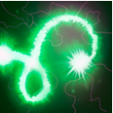

所有法师都会点魔法，其中一部分通过长时间的学习应该也能成为巫师，然而只有其中最有天赋的，才有资格成为魔导师。法师们都是一样，虽然相互认识，但却并不相互尊重。在整个魔法界，拉比克已经算是著名的斗士和学者，不过他自己也没想过自己是当魔导师的料，直到他第17次外出刺杀。他和往常一样将那些失败者从高台上抛下，轮到第12个人时，他猛然的发现自己的生命是如此的无趣。曾经很简单的短暂法术干扰或者空手召唤火焰都能让他兴奋不已，而对他来说已经是意料之中的事情。他渴求更大的挑战。于是，他戴上了战斗面具，做了每个试图超越的巫师都会做的事：扬言要杀死一名魔导师。拉比克很快就发现对一个魔导师宣战的后果就是对整个魔导师群体宣战，他们将愤怒倾泻在他身上。每个魔导师的咒语都是势不可挡的能量洪流，每次攻击都是精确的杀招。然而很快魔导师们就发现了一些诡异的事情：他们好像在被自己的法术攻击。魔法漩涡中隐约传来拉比克的轻笑，他隐秘的解读着魔导师们的法术，复制其中之一，然后用这个法术攻击另外一人，在魔导师之间 制造着他精心编制的混乱。被背叛的愤怒开始在魔导师们中滋生，很快他们就开始相互攻击，因为他们也不确定究竟是谁攻击了自己。战斗终于停止，所有的魔导师都被他人的魔法灼烧，冻僵，甚至切成碎片，死伤惨重。拉比克则独自站在一旁，疲惫却欣喜，这次战斗让他获益颇丰。当他向隐修议会提出晋升的要求时，没有人敢置喙一句，议会中的幻寂十一长者一致同意，承认他为大魔导师。
隔空取物
拉比克利用他的隔空取物能力，将敌人短暂抬到空中，然后猛投向地面。被投下的单位会砸晕落地点附近的敌人。
冷却时间：22秒
魔法消耗：120
等级1：造成1.5秒的悬空，降落后造成1秒眩晕。
等级2：造成1.75秒的悬空，降落后造成1.25秒眩晕。
等级3：造成2秒的悬空，降落后造成1.5秒眩晕。
等级4：造成2.5秒的悬空，降落后造成1.75秒眩晕。
即使是最伟大的魔导师也将他的力量用来娱乐。
弱化能流
拉比克制造一道强大的秘法能量流，在多个敌方单位之间流动，造成伤害并降低他们的攻击力。每次弹跳造成的伤害递减。
冷却时间：16/14/12/10秒
魔法消耗：120/130/140/150
等级1：造成80点伤害，降低20点攻击力。
等级2：造成160点伤害，降低25点攻击力。
等级3：造成240点伤害，降低30点攻击力。
等级4：造成320点伤害，降低35点攻击力。
拉比克最喜欢用来对付那些试图刺杀他的人的法术其实是一个相当简单的咒语。
失效立场
拉比克对秘法的精通保护他的友军免受弱小魔法的伤害，给他们带来魔法抗性。
等级1：降低10%魔法伤害。
等级2：降低14%魔法伤害。
等级3：降低18%魔法伤害。
等级4：降低22%魔法伤害。
不是每一个魔导师都能成为大魔导师...
技能窃取
拉比克钻研一个敌方英雄的魔法精华之痕，学习这个英雄最后释放的技能的秘密。拉比克将可以使用这个技能，维持几分钟或直到他死亡。
等级1：持续3分钟，冷却时间20秒。
等级2：持续4分钟，冷却时间18秒。
等级3：持续5分钟，冷却时间16秒。
可以使用神杖升级。减少冷却时间，提升施法距离并将窃取的技能升级为神杖升级后的效果。
神杖升级冷却时间：2秒
...不过即使是他们那些低级的魔法也能变得非常实用。
| 力量：19+1.5 | 攻击力：44-54 |
| 敏捷：14+1.6 | 移动速度：290 |
| 智力：27+2.4（主属性） | 护甲：1 |
| 转身速度：0.7 | 攻击前摇：0.4 |